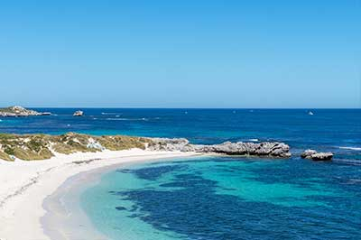
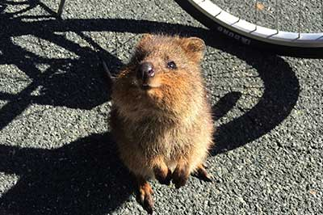

The beautiful beaches, stunning sunsets and enchanting forrests and wineries of the South West, make Western Australia a must-see destination. Grab a TransPerth SmartRider, and ride the buses, train and ferry to discover the sights of Perth.

ROTTNEST ISLAND - SPEND YOUR DAYS EXPLORING SOME OF THE MOST SPECTACULAR SWIMMING SPOTS, DIVING AND SURF BREAKS IN THE WORLD.
One of the best ways to get familiar with the city is to visit the Western Australian Visitor Center . The Western Australian Visitor Centre is located in the centre of Perth. It is a one stop shop for travel information, souvenirs and offers a free tours and accommodation booking service for all of Western Australia.
Perth is an urban oasis among the spectacular beauty of Western Australia - and that's why the locals love it. Stunning beaches, al fresco breweries, wineries, epic events all at our doorstep.
The Island has spectacular, turquoise waters, an abundance of outdoor activities and the cutest marsupials.
Rottnest is the perfect place to visit for a day trip or stay for a couple of days. Check out the best things to do on the island (besides capturing the best quokka selfie).
A trip to Rottnest Island is an unforgettable experience.

ROTTNEST ISLAND, HOME TO THE CUTEST MARSUPIAL ON EARTH!